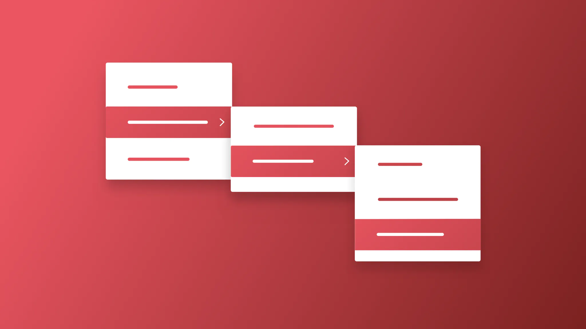
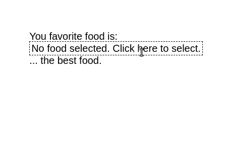

If you’re getting into Elm and still handling CSS files, just thrash them. Really. Go ahead and do it, because in Elm, we have the beautiful Elm-UI. You’ll get to write design in a language that’s actually understandable. However, Elm-UI probably still doesn’t have everything you might need. One simple thing it doesn’t have builtin is a dropdown, something you see everywhere.
Follow along and learn how to build a barebones dropdown. In part II, we’ll make a parameterized version using Elm’s powerful types. More specifically, you’ll master parameterized types! You can find it here.
Setup
Start a new a Elm project with elm init and create a Main.elm file inside the src folder. You can also follow along using Ellie for this first part (when we start using parametrized types we’ll create a new module for a reusable dropdown).
Install elm-ui with elm install mdgriffith/elm-ui.
Start with the following barebones structure:
module Main exposing (main)
import Browser
import Html
import Element as E
import Element.Background as Background
import Element.Border as Border
import Element.Events as Events
type alias Model =
{ }
initialModel : Model
initialModel =
{
}
type Msg
= NoAction
update : Msg -> Model -> Model
update msg model =
case msg of
NoAction ->
model
view : Model -> Html.Html Msg
view model =
E.layout
[]
(
E.column
[ E.centerX
, E.centerY
]
[ E.text "You favorite food is:"
, E.text "... the best food."
]
)
main : Program () Model Msg
main =
Browser.sandbox
{ init = initialModel
, view = view
, update = update
}elm make src/main.elm and go the index.html file created in the project folder. Right off the start, you get a nice centered layout like this:

Uau, look at the code to center the column. Isn’t life wonderful? I’ll never get tired of this.
The dropdown
Ok, let’s focus. What is a dropdown anyway? A dropdown allows the user to choose one option from a predefined list. Let’s build a simple dropdown to select our favorite food. We need some options to choose from. We’ll create a Food type that has an id, name and foodType, which can be FastFood or Regional.
type FoodType
= FastFood
| Regional
type alias Food =
{ id : Int
, name : String
, foodType : FoodType
}
foodList : List Food
foodList =
[ Food 0 "Hotdog" FastFood
, Food 1 "Hamburguer" FastFood
, Food 2 "Taco" FastFood
, Food 3 "Francesinha aka Little French" Regional
, Food 4 "Sauerkraut" Regional
, Food 5 "Kimchi" Regional
]Add that after the imports. Our model needs to know what is the currently selected favorite food and also if we’re currently selecting any food from the dropdown or not.
type alias Model =
{ favoriteFood : Maybe Food
, status : Status}
type Status
= Normal
| SelectFood
initialModel : Model
initialModel =
{ favoriteFood = Nothing
, status = Normal
}favoriteFood might have a Food that was selected, or not, in which case it will be Nothing (which is also the starting value, since the user hasn’t selected anything yet). Status just tells us whether we’re currently selecting a food from the list or not. When the user clicks the dropdown, status changes to SelectFood. When the user clicks one of the dropdown options it goes back to Normal (which is also the starting status).
For now, let’s start working on actually designing the dropdown in our view. Let’s create a column with all our possible options written.
view : Model -> Html.Html Msg
view model =
let
selectedFoodName =
case model.favoriteFood of
Nothing -> "No food selected. Click here to select."
Just food -> food.name
dropdown =
E.el
[ Border.width 1
, Border.dashed
, E.padding 3
, Events.onClick ClickedSelectFood
]
(E.text selectedFoodName)
in
E.layout
[]
(
E.column
[ E.centerX
, E.centerY
]
[ E.text "You favorite food is:"
, dropdown
, E.text "... the best food."
]
)We just created a placeholder for the name of our favorite food. It already manages the case when there is no food selected. And, if we click on the box, we’ll send the ClickedSelectFood message. We need to create this message and deal with it in the update.
type Msg
= NoAction
| ClickedSelectFood
update : Msg -> Model -> Model
update msg model =
case msg of
NoAction ->
model
ClickedSelectFood ->
{ model | status = SelectFood }When we click on the dropdown, a ClickedSelectFood is sent and our status changes to SelectFood. Makes sense, right? We’ll need to do something with that status, but for now, you’ll get something like this:

What we want is for a list of food options to appear below the dropdown, and over the remaining content, without changing the existing layout. Thankfully, elm-ui has a nice attribute for this, it’s called below. The content to be added will be inside this attribute. We’ll create a function to view a list of foods and a function to view a single food and compose them inside our view.
view : Model -> Html.Html Msg
view model =
let
selectedFoodName =
case model.favoriteFood of
Nothing -> "No food selected. Click here to select."
Just food -> food.name
dropdown =
case model.status of
Normal ->
E.el
[ Border.width 1
, Border.dashed
, E.padding 3
, Events.onClick ClickedSelectFood
]
(E.text selectedFoodName)
SelectFood ->
E.el
[ Border.width 1
, Border.dashed
, E.padding 3
, E.below (viewFoodList foodList)
]
(E.text selectedFoodName)
in
E.layout
[]
(
E.column
[ E.centerX
, E.centerY
]
[ E.text "You favorite food is:"
, dropdown
, E.text "... the best food."
]
)
viewFoodList : List Food -> E.Element Msg
viewFoodList foods =
E.column
[ ]
<|
List.map viewFood foods
overColor : E.Color
overColor = E.rgb 0.9 0.9 0.1
viewFood : Food -> E.Element Msg
viewFood food =
E.el
[ E.width E.fill
, E.mouseOver [Background.color overColor]
]
(E.text food.name)That’s a bit step. The important part is inside the let block in view. If status is SelectFood, then we will have a list of Element.text with the names of the foods attached to the below attribute. Otherwise, we’ll not use that attribute. Also note that the onClick attribute only appears when status is Normal. This is because is we kept it on both cases, the event would be triggered when clicked one of the options, because this list lives inside the dropdown element. We don’t want that. The ClickedSelectFood message should only be sent then the status is Normal. If we’re already selecting an option from the food list, it doesn’t make sense to send a message that triggers the logic to open the dropdown (it’s already opened). Now, when we click the dropdown, we’ll get the desired list.

In viewFood, we already added some nice visual sugar for changing the background color of the option where the mouse is.
As you can inspect, the list is drawn over the rest of the content. That’s why the layout is not changed in the process. But this also means that we’re now seeing the content below. We need to fill the background of all options.
white : E.Color
white = E.rgb 1 1 1
viewFood : Food -> E.Element Msg
viewFood food =
E.el
[ E.width E.fill
, E.mouseOver [Background.color overColor]
, Background.color white
]
(E.text food.name)
We could style it more, add a little padding, making sure the options have the same width, etc., but let’s focus on the logic. There is only one thing missing: implementing the logic for when we actually select an option. When we click an option, a message has to be sent specifying which food was clicked on, save it in the model and revert status back to Normal.
type Msg
= NoAction
| ClickedSelectFood
| ClickedDropdownFood Food
update : Msg -> Model -> Model
update msg model =
case msg of
NoAction ->
model
ClickedSelectFood ->
{ model | status = SelectFood }
ClickedDropdownFood food ->
{ model | status = Normal, favoriteFood = Just food }
viewFood : Food -> E.Element Msg
viewFood food =
E.el
[ E.width E.fill
, E.mouseOver [Background.color overColor]
, Background.color white
, Events.onClick (ClickedDropdownFood food)
]
(E.text food.name)We added the ClickedDropdownFood message, which will be sent when we click one of the foods of the list (see the onClick event in viewFood). When update receives this message, status reverts to Normal and the new favoriteFood is the one we clicked on. view then renders everything as it should.

Now you know how to create a simple dropdown. What if you need multiple dropdowns? What if they’re selecting different things? That’s what we’ll cover in part II, where we’ll create a reusable component that will receive any type and display it like we did here.
What do you think? How would you improve on this? Drop me a message at blog@diogoaos.com.